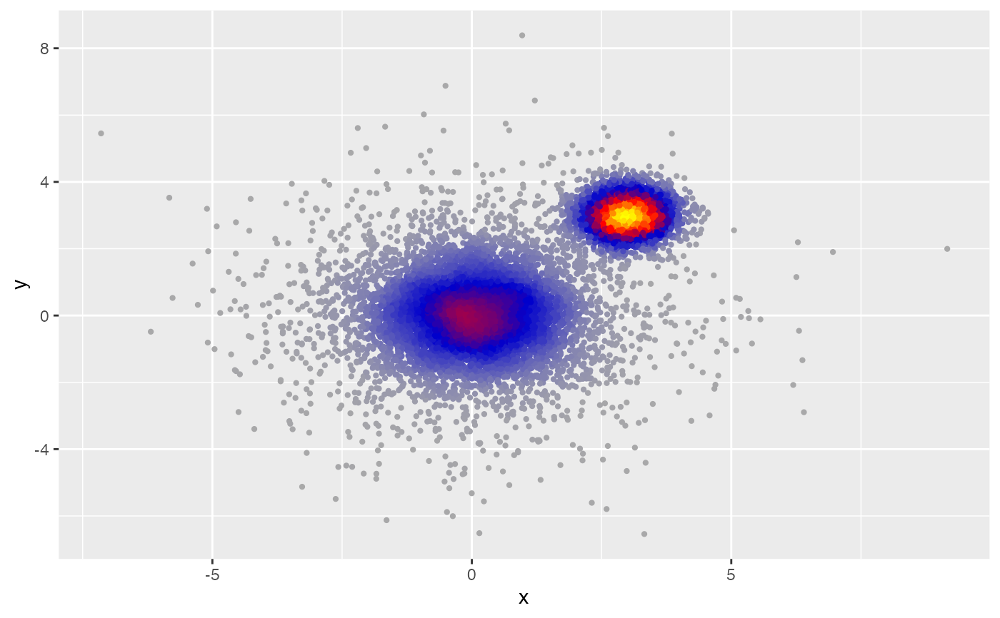
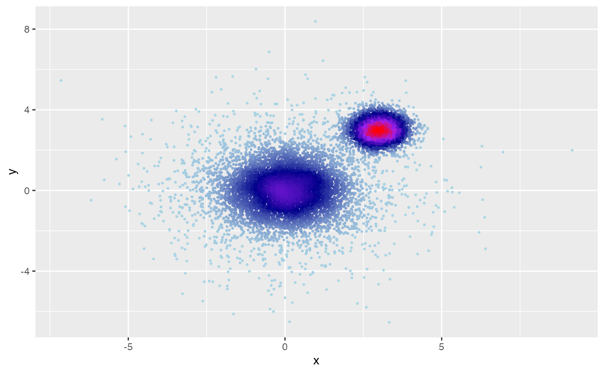
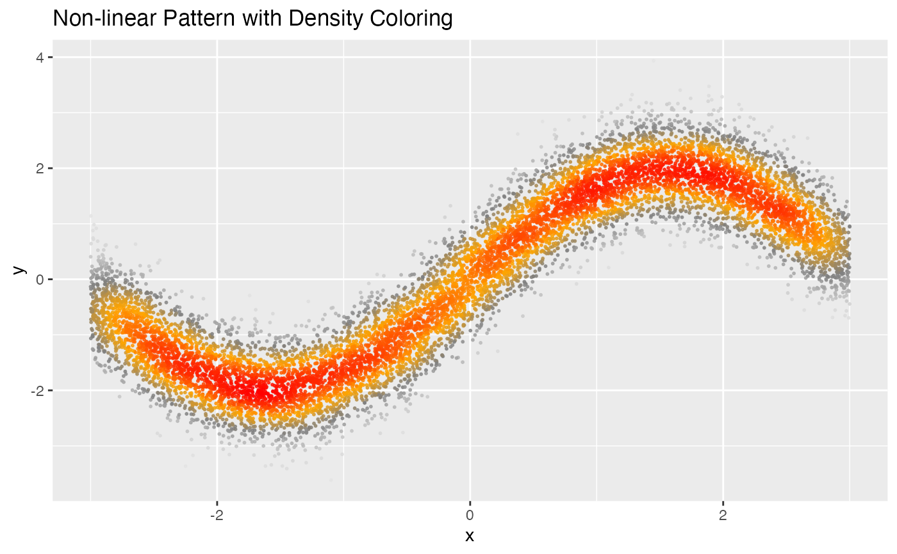

This geom creates a scatter plot where points are colored by their local density, using a custom color gradient.
geom_dense_scatter(
mapping = NULL,
data = NULL,
stat = "DenseScatter",
position = "identity",
na.rm = FALSE,
show.legend = NA,
inherit.aes = TRUE,
pal = NULL,
size = 0.8,
alpha = 1,
...
)Set of aesthetic mappings created by aes
The data to be displayed in this layer
Position adjustment, either as a string, or the result of a call to a position adjustment function
If FALSE, the default, missing values are removed with a warning. If TRUE, missing values are silently removed
logical. Should this layer be included in the legends? NA, the default, includes if any aesthetics are mapped
If FALSE, overrides the default aesthetics, rather than combining with them
Color palette. A vector of colors to use for the density gradient, from lowest to highest density
Point size
Point alpha/transparency
Other arguments passed on to layer
A ggplot2 layer that can be added to a plot
# Create large dataset with multiple clusters
library(ggplot2)
#> Want to understand how all the pieces fit together? Read R for Data
#> Science: https://r4ds.hadley.nz/
set.seed(60427)
n <- 1e4
df <- data.frame(
x = c(rnorm(n * 0.5), rnorm(n * 0.3, 3, 0.5), rnorm(n * 0.2, 0, 2)),
y = c(rnorm(n * 0.5), rnorm(n * 0.3, 3, 0.5), rnorm(n * 0.2, 0, 2))
)
# Basic usage with default settings
ggplot(df, aes(x, y)) +
geom_dense_scatter()

# Custom color palette to highlight density variations
ggplot(df, aes(x, y)) +
geom_dense_scatter(
pal = c("lightblue", "darkblue", "purple", "red"),
size = 0.5
)

# Create large dataset with non-linear relationship
x <- runif(n, -3, 3)
df2 <- data.frame(
x = x,
y = sin(x) * 2 + rnorm(n, 0, 0.5)
)
# Visualize non-linear relationship with density
ggplot(df2, aes(x, y)) +
geom_dense_scatter(
pal = c("gray90", "gray50", "orange", "red"),
size = 0.4,
alpha = 0.8
) +
labs(title = "Non-linear Pattern with Density Coloring")

# Create large dataset with varying spread
x <- rnorm(n)
df3 <- data.frame(
x = x,
y = x * rnorm(n, mean = 1, sd = abs(x) / 2)
)
# Visualize heteroscedastic pattern
ggplot(df3, aes(x, y)) +
geom_dense_scatter(
pal = c("#F5F5F5", "#4169E1", "#FF4500"),
size = 0.3
) +
theme_minimal() +
labs(title = "Varying Spread Pattern")
